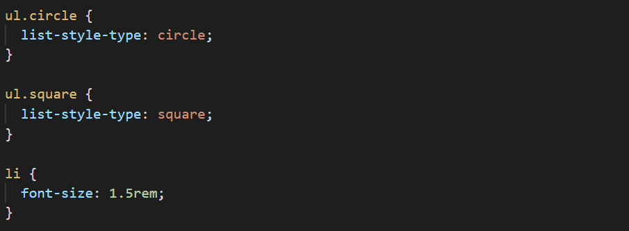
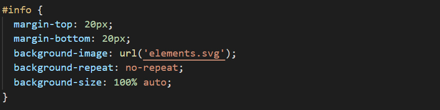
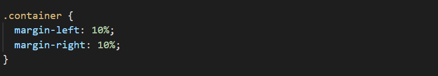
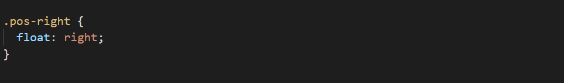
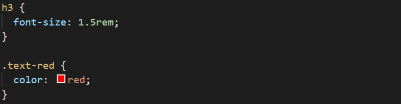
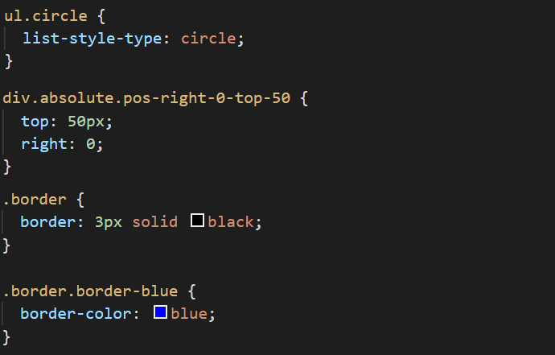
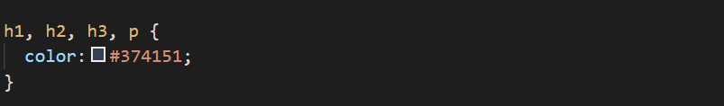
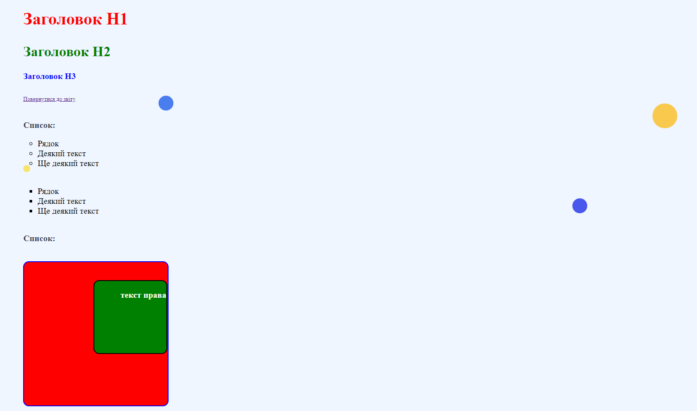
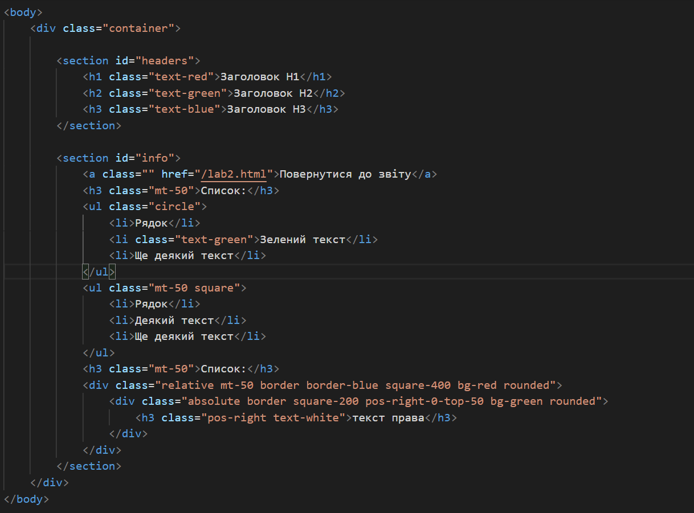

ІС-01 Бригада 7: Стеблина Дмитро, Меркур'єв Олег, Серветнік Богдан, Кубай Дмитро
КАСКАДНІ ТАБЛИЦІ СТИЛІВ. СЕЛЕКТОРИ. ІДЕНТИФІКАТОРИ. СТИЛЬОВЕ ОФОРМЛЕННЯ ТЕКСТОВИХ ЕЛЕМЕНТІВ В HTML-ДОКУМЕНТАХ
Придбати практичні навички роботи з селекторами,ідентифікаторами, списками, різноманітними властивостями кольору і фону, зовнішними та внутрішними відступами, плаваючими елементами, оформленням текстових елементів
Списки
Ідентифікатори
Відступи
Плаваючі елементи
Селектори тегу і класу
Інші селектори
Групування селекторів
Скріншот сторінки
Скріншот HTML коду
Ми придбали навички роботи з селекторами,ідентифікаторами, списками, різноманітними властивостями кольору і фону, зовнішними та внутрішними відступами, плаваючими елементами, оформленням текстових елементів